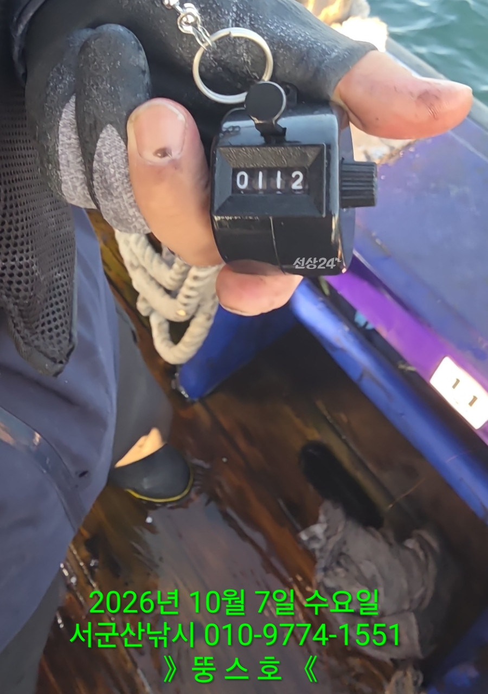
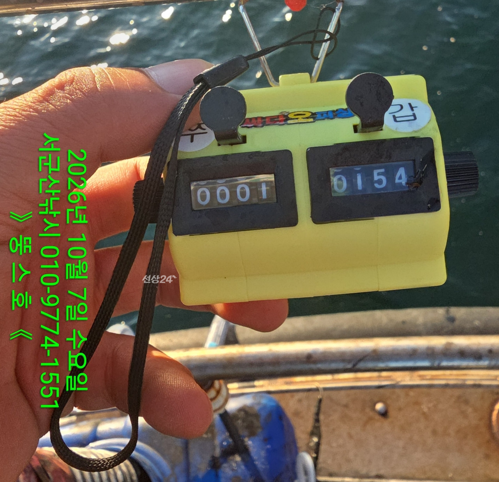
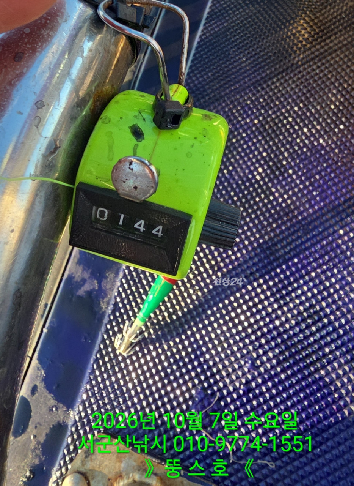
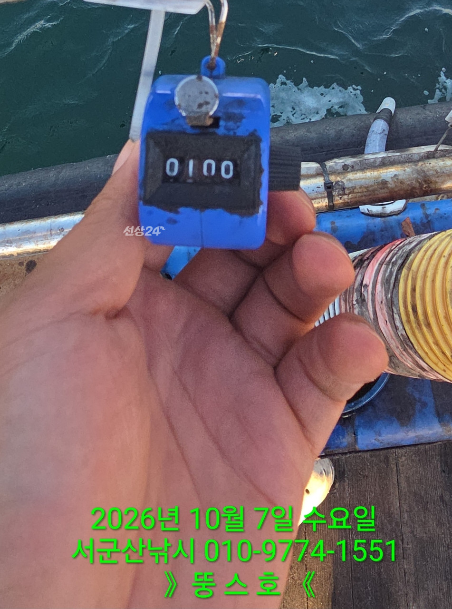
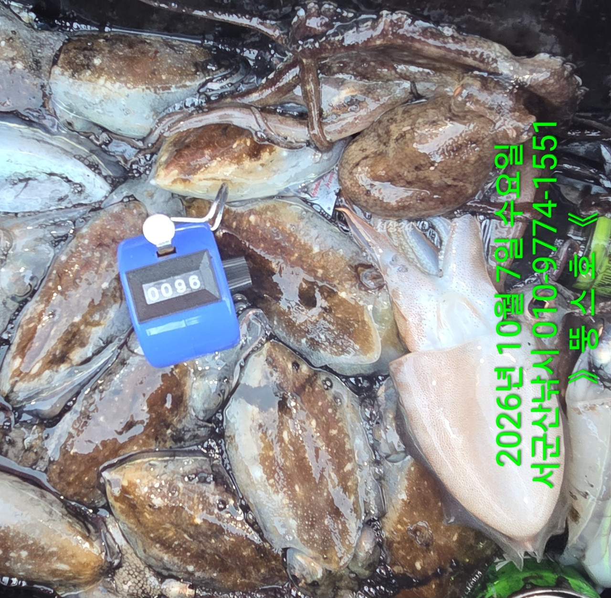
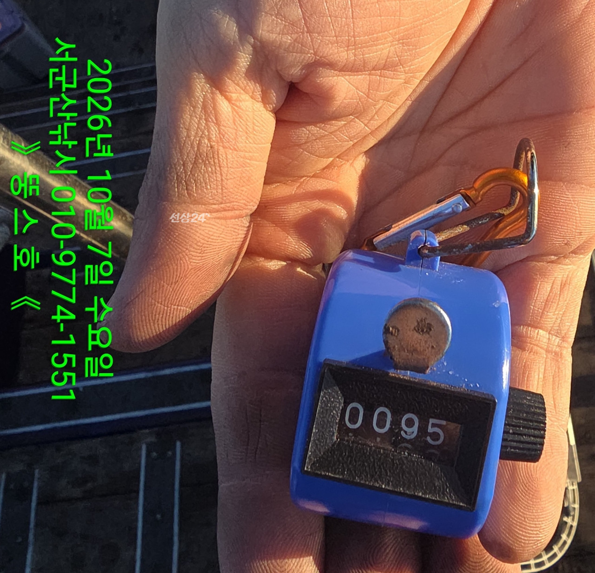
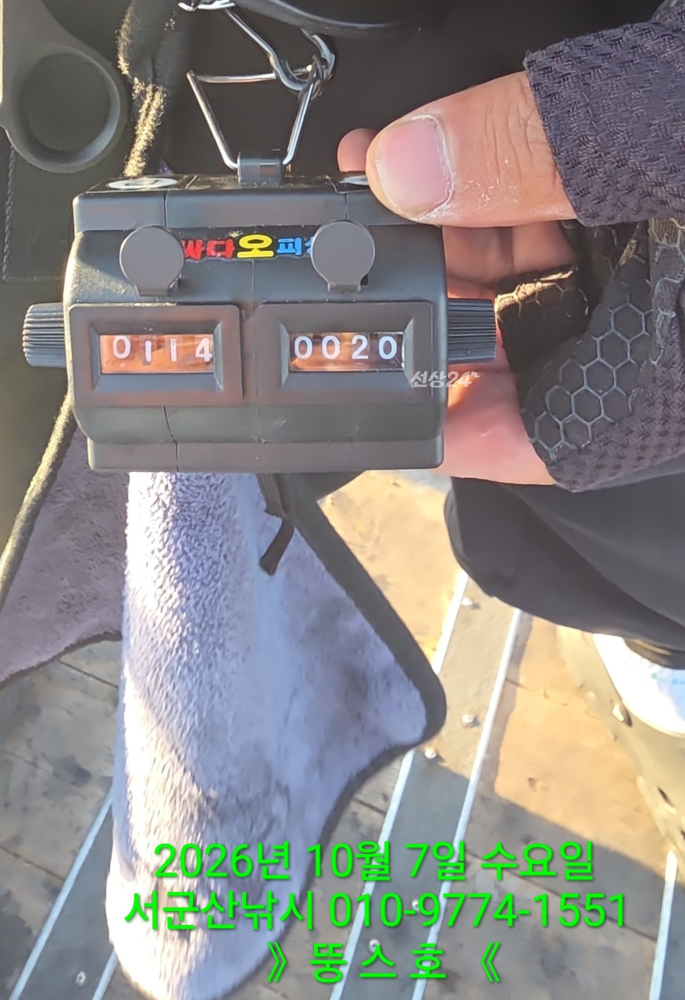
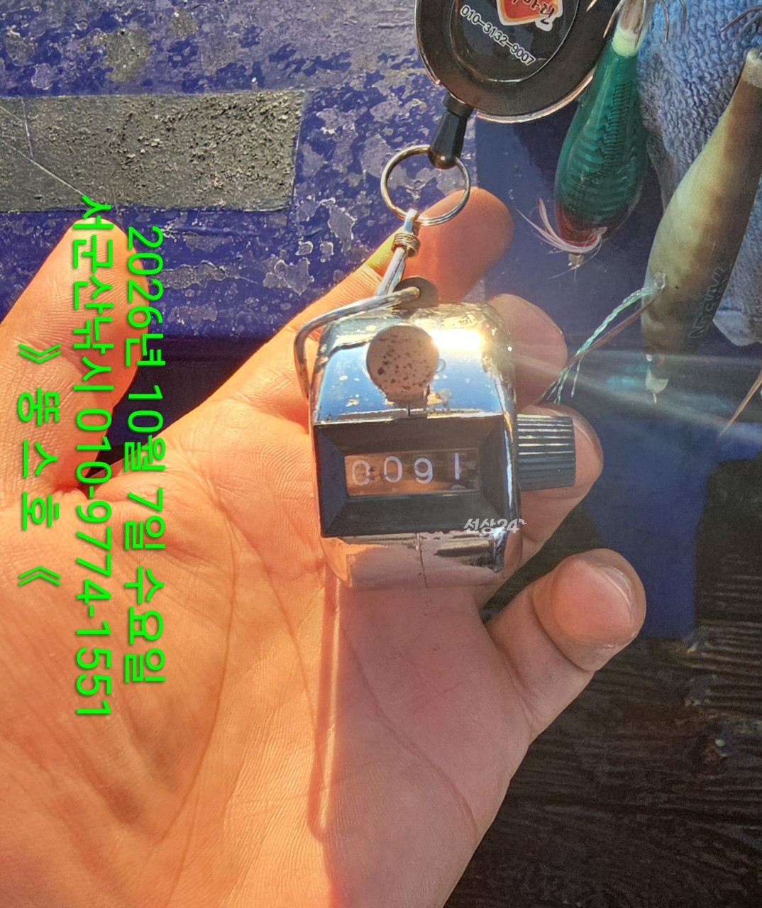
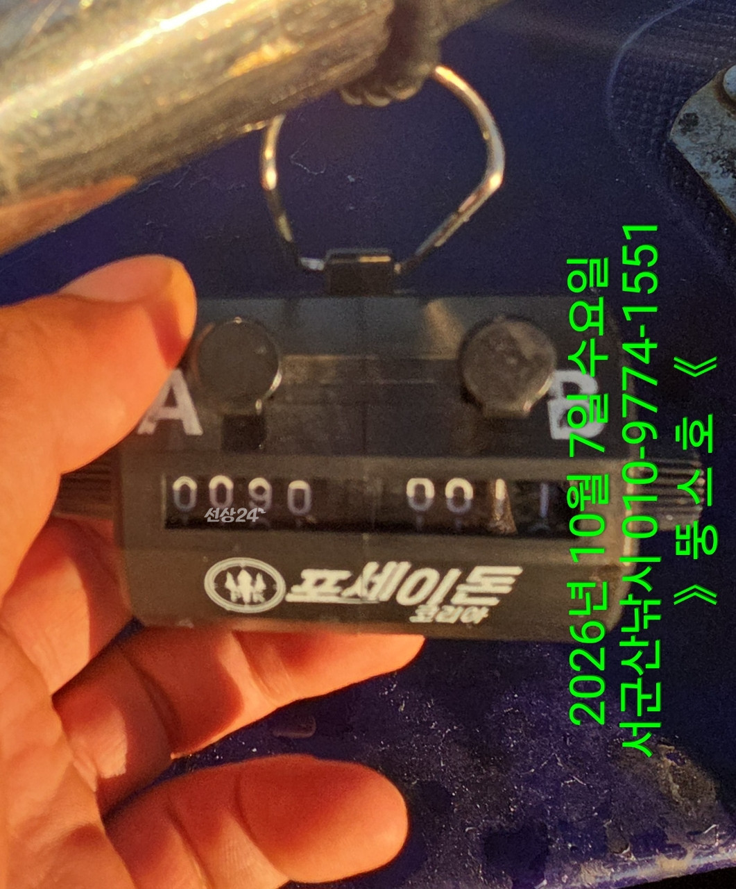

2026-10-07 · 군산 뚱스호
조황정보 HOME / 조황정보 / 조황상세
10/7 [군산 뚱스호]_갑오징어 종일반 조황_고생많으셨습니다 ~! 10/7 [군산 뚱스호]_갑오징어 종일반 조황_고생많으셨습니다 ~! 안녕하십니까..10월 7일 갑오징어종일반 조황입니다첫포인트 너울타며 하나둘 나오는데입질 끊어져 다른데 이동..나온다 나오기는 하는데성이 안차서옮길까 하다가 죽돌이 시전..그냥 꾸준히 여기저기 찍으며잡다보니 좋은 조황으로 마무리하였습니다 오늘부터 카운터기 사진만 찍습니다조사님들 조과물 정리할때까지기다리는 시간이 적지 않아 좀더간소하게 바꾸었습니다 ■ 예약문의 : 063-466-6565 010-9774-1551■ 오시는길 : 전라북도 군산시 새만금북로277(오식도동 1002)■ 서군산낚시 실시간 예약 바로가기 : http://seo.sunsang24.com/■ 서군산낚시 밴드 바로가기 : https://band.us/band/78646704 서군산낚시 (서해안/비응항) 1.7km 갑오징어 2026. 10. 7 | 조회 556 서군산낚시 (서해안/비응항) 2026. 10. 7 | 조회 556








